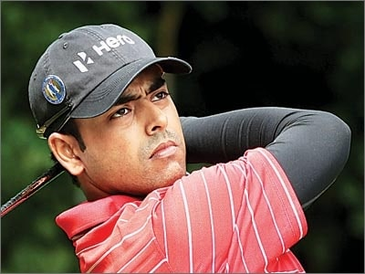

Shikhar Dhawan
Cricketer
Robin Uthappa
Cricketer

Shubhankar Sharma
Golfer
Joshna Chinappa
Squash Player

BCCI Women's
Cricket Team
Cricket
K Kiran Kumar Raju
Biker
Sushil Kumar
Wrestler

Jennifer Luikham
Tennis

Supriyo Mondal
Swimmer

Trishul Chinappa
Golfer

Anju Kadam
Entrepreneur

Shwetambari Shetty
Fitness Guru

Mayuri Lingaraj
Swimmer

Anirban Lahiri
Golfer

Dinaz
Guinness Record Holder

Remya Actress
Actress

Adil Kalyanpur
National Junior Tennis Champion

Yash Aradhya
Go Karting Champion
Sneha Reddy
Tennis Player

Sachin Kumar

Aniruddha Budhya

Mr. Yegnesh
Mr. Vickram Murthy

Nirupama Surana
Mrs India World

Ananya and Taran

Shyamasree

Saroj

Madhurjya Bohra
International Triathlete
Yashaswini N V

Gabriello
Model

Kartikeyan VS
Bharath DV

Vasundhara Sandeep
Kapil Tyagi
Football Player
Rajitha Vasu

Pradeep Ram
Navaneeth Krishnan
Anil Panchal
Priyam Thomas
Athlete

Sami Akhtar

Daegal Dodinho